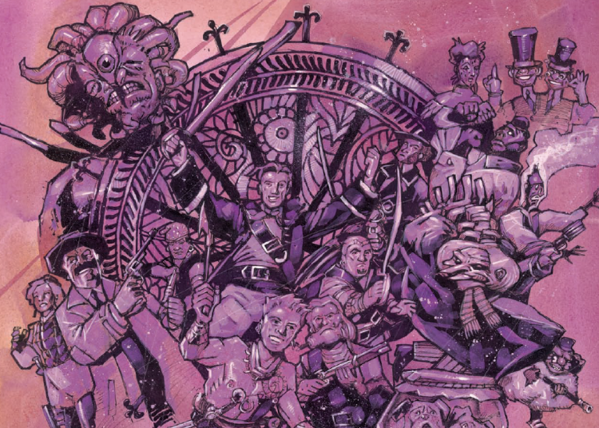
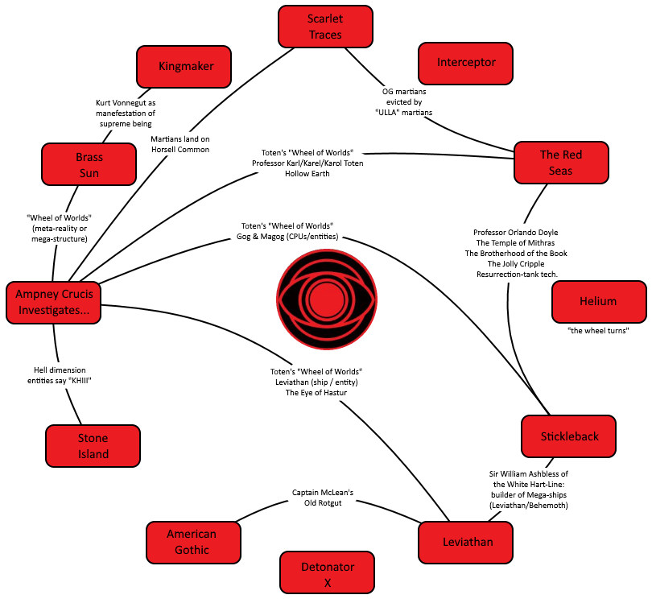

Ian Edginton likes to blend his stories into a multiverse that has been described as the "Wheel of Worlds" and specifically referenced by protagonist Professor Karl Toten in the series Ampney Crucis Investigates. Specifically, a montage in The List of Ten (episode six, prog 1719) portrays characters from Leviathan, The Red Seas and Stickleback.
Art by Simon Davis
Of key importance is that these tales are not happening in the same universe, but rather in neighboring dimensions, of which there are exactly thirteen. Twelve are relatively normal, and the thirteenth is a chaos, or hell dimension, which works as a prison for dark gods (and so on) to try to escape from.
For this reason, a character might exist in more than one dimension, but behave differently. Thus, in The Red Seas, Professor Orlando Doyle is an antagonist trying to revive a dark goddess. In Stickleback he is instead the curator of The Temple of Mithras and representative of the Brotherhood of the Book (and serves most often as a force that assists the protagonist). To complicate matters, the Doyle of The Red Seas appears to have cloned himself and exists in the modern world of that dimension (and his motives no longer seem to align with chaos and destruction).
The Temple of Mithras is a Tardis-like building (small on the outside, massive on the inside) that exists below London and is home to the Brotherhood of the Book. As the Temple exists in all of the realities, the chief representative of each Brotherhood is also a member of the (interdimensional) Chapter of Twelve (having banished their thirteenth representative and barred their door). See The Chimes At Midnight (The Red Seas, prog 1644).
As well as mingling the various threads of multiple series, Edginton also enjoys linking into public domain literature, and so you will find clear links to War of the Worlds (in Scarlet Traces), creatures of the Cthulhu Mythos (with Lovecraft himself depicted at one stage) and Sherlock Holmes, as well as the use of various global mythologies.
The chart below attempts to provide all the links (tenuous or otherwise) between the various series, and also includes series with no clear link - even if there are thematic links. In nearly every tale, there is a sense of worlds colliding as one group attempts to escape into another's realm. With Helium, it is the above-fugue and below-fugue worlds. In Interceptor, Earth is a prison for aliens (disguised as humans). In Detonator X, Earth attempts to draw power from another dimension, but it's home to multiple Godzillas.
